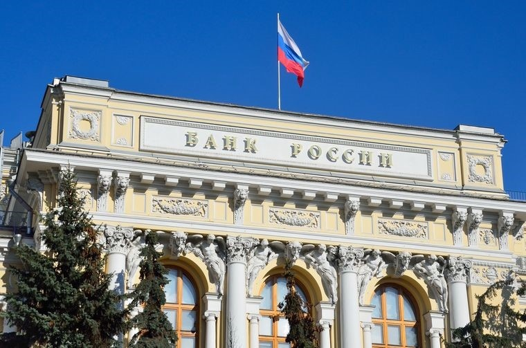

Регистрация в телеграм-боте: @Mavrodi_robot

Международные резервы РФ упали ниже $400 млрд
Объем международных резервов РФ по состоянию на 16 января 2009г. составлял 396,2 млрд долл., сообщает департамент внешних и общественных связей ЦБ РФ. На 9 января 2009г. он составлял 426,5 млрд долл.
Таким образом, международные резервы РФ на прошлой неделе сократились на 30,3 млрд долл. Для многих российских экспертов такой результат был вполне ожидаемым.
Дело в том, что российский Центробанк, несмотря на проводимую девальвацию рубля, вынужден тратить средства резервов на поддержку национальной валюты, продавая валюту США. Таким образом, уменьшение объема международных резервов произошло из-за валютных интервенций Центробанка, а также негативной переоценки части резервных активов, номинированных в евро.
По оценкам участников рынка, 12 января ЦБ потратил около 3-4 млрд долл. на интервенции, 15 января около 7-8 млрд долл. Общие расходы ЦБР на валютные интервенции на прошлой неделе оцениваются аналитиками UBS в размере 26 млрд долл.

Вот и всё. На поддержание нынешнего, искусственно завышенного курса рубля у ЦБ уходит $26 млрд. в неделю (!). Надолго хватит этих $400 млрд.? А ведь все деньги угрохать на бессмысленное совершенно продолжение «валютных интервенций» власти не могут. У них есть и другие проблема. Куча, причём.
Итак, месяц-полтора от силы. Я на днях говорил про апрель − какой там «апрель»?! Конец февраля-начало марта МАКСИМУМ. (А может, и раньше.) После чего ЦБ вынужден будет уйти с валютного рынка и бросить всё на произвол судьбы. Хочет он того или нет. Деньги у него просто кончатся! И вы проснётесь вдруг в одно прекрасное утро и обнаружите с изумлением, переходящим в шок, что доллар-то теперь стоит… тысячу! Или две!! Или пять!!! Соответственно, и продукты все. Тоже… тысячу, и две, и пять. Хлеб, молоко, мясо… Всё!!! А зарплата ваша, между прочим, не увеличится ни на рубль. Как вам платили сто рублей, так и будут платить. (Если вообще будут.) А кушать-то, между прочим, каждый день ведь надо… Про что я и писал. Глад и мор.
Немедленно!!! Немедленно покупайте доллары! Забирайте деньги из всех этих банков и покупайте наличные доллары! Руководители этих банков − обычные мошенники. Они обманывают вас, убеждая в нынешней, ужасающей совершенно ситуации хранить у них деньги в рублях под какие-то там 10 (или сколько?) процентов. Убеждают, пользуясь вашей экономической безграмотностью и неосведомлённостью. Злоупотребляют вашим доверием. Это и есть мошенничество. Самое настоящее, чистой воды. Их судить всех за это надо! Ещё раз повторяю: покупайте наличные доллары. Пока ещё не поздно. Завтра уже может быть поздно.
Регистрация в телеграм-боте: @Mavrodi_robot